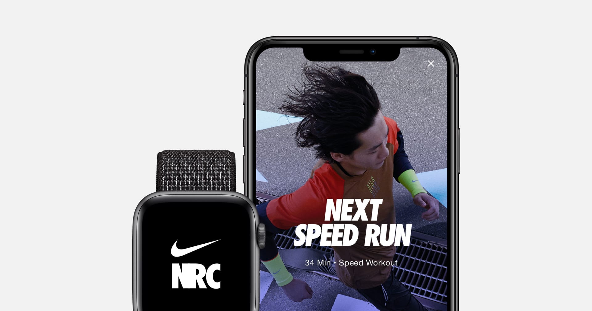

Explore the Nike ZoomX Vaporfly Next% 2
Speed You Can Feel
A shoe made to help you chase your next PR, the Nike ZoomX Vaporfly Next% 2 boasts a redesigned upper that takes an OG to the next level. This breathable racer has a full-length carbon fiber plate that creates a responsive feel that keeps you moving through your stride.

Your World Record
The Vaporfly NEXT% 2 is our fastest shoe, with the same elite technology that’s been helping runners cross finish lines ahead of the competition. But with an upper redesigned for everyday comfort and durability across a wide range of feet, it’s not just about world records. It’s about your records.
